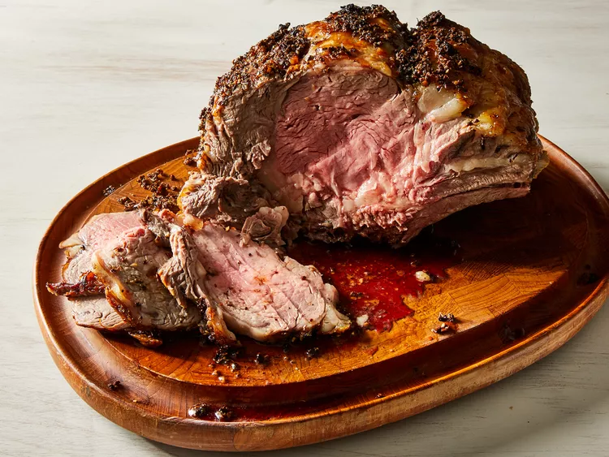

Garlic Prime Rib

Description:
This recipe will allow you to cook a super delicious prime rib steak
for any special occassion! The total time it will take to create this
dish will be 2 hours and 50 minutes, and it will be
able to serve 15 people.
Ingredients:
- 1 (10 pound) prime rib roast
- 10 cloves garlic, minced
- 2 tablespoons olive oil
- 2 teaspoons salt
- 2 teaspoons ground black pepper
- 2 teaspoons dried thyme
Steps:
- Gather all ingredients for marinade
- Mix garlic, olive oil, salt, pepper, and thyme
together in a small bowl
- Place roast in a roasting pan with the fatty side up.
Spread mixture over the top of roast; let roast sit out
until it is at room temperature, no longer than 1 hour.
- Preheat the oven to 500 degrees F (260 degrees C).
- Bake roast in the preheated oven for 30 minutes; reduce the
temperature to 325 degrees F (165 degrees C), and continue
roasting for an additional 60 to 75 minutes. The internal
temperature of the roast should be at 135 degrees F (57
degrees C) for medium rare.
- Allow roast to rest for 10 or 15 minutes before carving so
the meat can retain its juices.